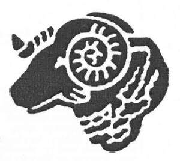

Trade Mark Journal No.2025/025 20 June 2025
UK00004215935 9 June 2025 (6,9,14,16,18,21,25,28,30,35,38,41)

- Class 6
- Badges (for vehicles) and bars for use therewith; keys, key blanks, locks and ornaments; money boxes; badges.
- Class 9
- Videos; sound recording and sound reproducing apparatus and instruments; compact discs; gramophone records; magnetic tapes for recording or reproducing sound or vision; photographic transparencies for photographic films; calculating machines; computer programmes, tapes and discs; telephone answering apparatus; telephone recordals; magnets; mouse pads; height charts; glasses; parts and fittings for all the aforesaid goods.
- Class 14
- Watches and clocks; jewellery for personal wear and adornment; earrings; badges and bars for use therewith; key rings; key blanks and key chains; pins; pendants; jewellery charms; lockets; tie pins; rings; cuff links; key rings and key chains.
- Class 16
- Printed matter; newspapers; periodical publications; books; photographs; pictures and prints; programme binders/holders; stationery; instructional and teaching materials; greetings cards; birthday cards; postcards; notepads; photograph albums; autograph books; personal organisers; address books; jotters; pens; pencils; erasers; pencil sharpeners; rulers; book markers; posters; calendars; gift bags; gift wrap; pen cases; envelopes; labels; stickers; blackboards; carrier bags; poster magazines; diaries; pads of paper; decalcomania; coasters of paper; mini football kits of paper; cheque book holders.
- Class 18
- Travelling bags; backpacks; umbrellas; duffel bags; rucksacks; bootbags; bags and satchels; holdalls; wallets; belts; purses; credit card holders; bootbags.
- Class 21
- Domestic utensils and containers; chinaware; glassware, porcelain and earthenware; combs; half pint glasses; pint glasses; mugs; whisky/whiskey glasses; wine glasses; champagne flutes; glass tumblers; whisky/whiskey tumblers; brushes; money boxes; toothbrushes; flags; curtain tiebacks; mini football kits of textile materials.
- Class 25
- Articles of outerclothing; articles of sports clothing; leisurewear; footwear and headgear; shirts; shorts; t-shirts; socks; sweatshirts; sweaters; hats and caps; scarves; jackets; dressing gowns; pyjamas; slippers; boxer shorts; articles of underwear; baby boots; bibs; romper suits; baby sleepsuits; dungarees; braces; wristbands; tracksuits; ties; articles of outerclothing; articles of sports clothing; leisurewear; footwear and headgear; shirts; shorts; t-shirts; socks; sweatshirts; sweaters; hats and caps; scarves; jackets; dressing gowns; pyjamas; slippers; boxer shorts; articles of underwear; baby boots; bibs; romper suits; baby sleepsuits; dungarees; braces; wristbands; tracksuits; ties. ; Clothing, footwear, headwear; Clothing; Knitwear [clothing]; Jackets [clothing]; Ready-to-wear clothing; Woolen clothing; Linen clothing; Headbands for clothing; Headbands [clothing]; Clothes; Gloves as clothing; Gloves [clothing]; Aprons [clothing]; Maternity clothing; Kerchiefs [clothing]; Jerseys [clothing]; Shorts [clothing]; Denims [clothing]; Oilskins [clothing]; Gabardines [clothing]; Leather clothing; Leather (Clothing of -); Parts of clothing, footwear and headgear; Knitted clothing; Embroidered clothing; Hoods [clothing]; Windproof clothing; Wristbands [clothing]; Belts for clothing; Belts [clothing]; Casual clothing; Rainproof clothing; Waterproof clothing; Jackets being sports clothing; Visors [clothing]; Jackets (Stuff -) [clothing]; Stuff jackets [clothing]; Clothing for leisure wear; Ready-made clothing; Bottoms [clothing]; Trunks being clothing; Playsuits [clothing]; Woven clothing; Infant clothing; Drawers [clothing]; Drawers as clothing; Clothing for sports; Sports clothing; Leisure clothing; Athletic clothing; Ties [clothing]; Clothing for children; Muffs [clothing]; Bodies [clothing]; Clothing for infants; Clothing for babies; Tops [clothing]; Weatherproof clothing; Clothing for cycling; Water-resistant clothing; Fabric belts [clothing]; Pockets for clothing; Handwarmers [clothing]; Clothing for skiing; Beach clothing; Triathlon clothing; Chaps (clothing); Thermal clothing; Cowls [clothing]; Fishing clothing; Men's clothing; Dance clothing; Mitts [clothing]; Braces for clothing; Plush clothing.
- Class 28
- Games; toys; playthings; party novelty hats; shinguards; gloves (for games); balloons; sporting articles; footballs; playballs; teddy bears; golf balls; ordinary playing cards.
- Class 30
- Chocolate, chocolates, confectionery; toffee, fudge; gingerbread; sweets; liquorice; lozenges, mints, candy, peanut confectionery; peppermints, sweets; popcorn; waffles; ice cream and preparations for making ice creams; biscuits; cookies, bread buns, pastry; sauces; snack foods; foodstuffs made from dough; pies, pasties, sausage rolls; sweets and savoury products, all having a pastry covering, pastry case or pastry shells; prepared meals; candy rock.
- Class 35
- Advertising; business management; business administration; office functions.
- Class 38
- Telecommunications; Providing access to an Internet discussion website; Providing access to web sites on the internet; Telecommunication of information (including web pages); Message sending via a website; Providing access to mp3 web sites on the internet; Access to content, websites and portals.
- Class 41
- Organising of sporting activities and of sporting competitions; Sporting activities; Sports club services; Organisation of sports events in the field of football.
Derby County (The Rams) Limited
Representative: Gateley Legal